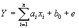
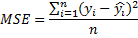
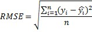

Множественная линейная
регрессия
– между набором
непрерывных предикторов и непрерывной зависимой
переменной. Часто используется следующее
регрессионное уравнение :

(1)
Здесь аi -
регрессионные коэффициенты, b0 -
свободный член(если он используется), е - член,
содержащий ошибку - по поводу него делаются
различные предположения, которые, однако, чаще
сводятся к нормальности распределения с нулевым
вектором мат. ожидания и корреляционной
матрицей Qi.
В рамках исследования выдвигается гипотеза, что
между группой факторов и результативным показателем
существует линейная связь, которая в нашем случае
описывается уравнением множественной регрессии:
Y=A0+A1X1+...+A4X4,
(2)
где А
0 –
свободный член уравнения при Х=0;
Х
1 … Х
4
– независимые переменные (факторы);
А
1 … А
4
– коэффициенты регрессии при соответствующих
независимых переменных (факторах), характеризующие
степень их воздействия (в абсолютном выражении) на
результативный показатель (зависимую переменную).
Среднеквадратическая
ошибка модели – для
вычисления среднеквадратической ошибки (MSE) все
отдельные остатки регрессии возводятся в квадрат,
суммируются, сумма делится на общее число
ошибок:

(3)
Квадратный корень из данной
величины обозначается как RMSE (Root Mean Square
Error):

(4)
Коэффициент детерминации
показывает, на сколько процентов вариация
результативного признака объясняется вариацией i-го
признака (частный) или всех вошедших в модель
факторных признаков (множественный).
Коэффициент регрессии аi
показывает, на сколько в среднем изменяется значение
результативного признака при изменении факторного на
единицу собственного измерения.